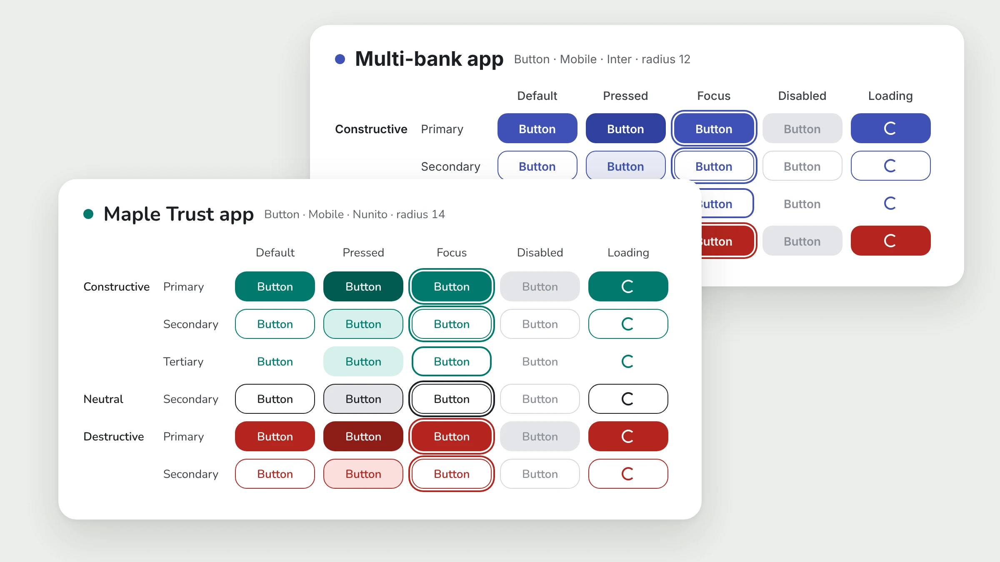
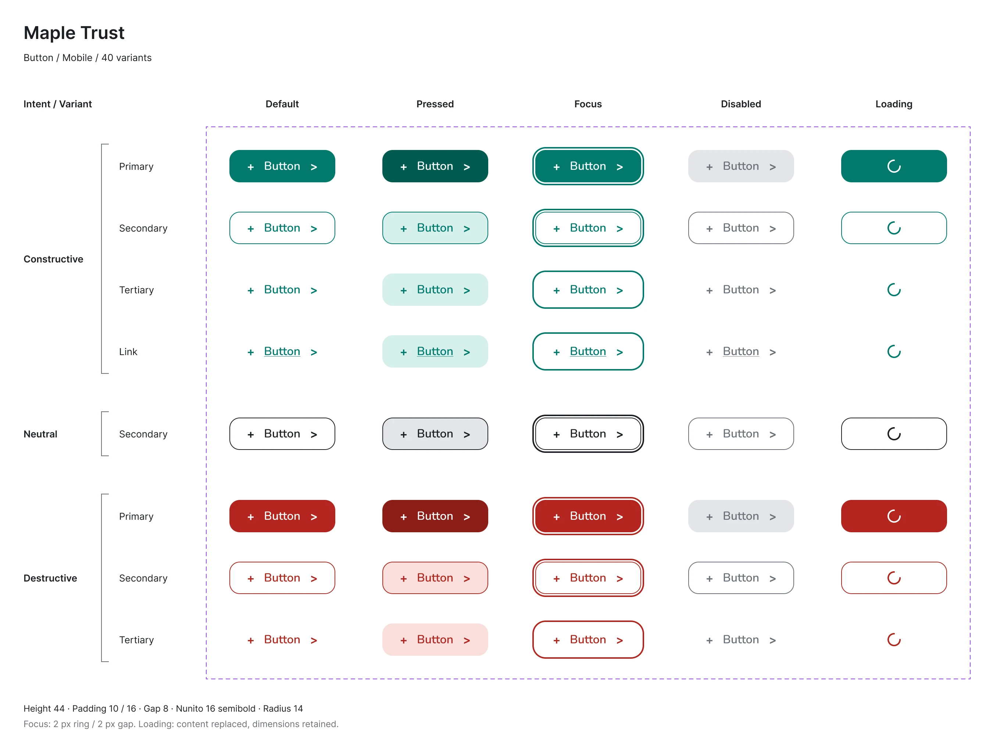

Another designer built a new theme with it
Later, another designer used my system for their app’s redesign. Same names, same components, a new look.

My part: I built this design system on my own.
Note: I recreated these screens. The banks are fictional and the data is placeholder. The flows and decisions are real.
I started as the only designer on a team of four. The app had three screens. Then the project grew, and the team grew to 15. Every screen had its own colors, and changes got lost. So I built one design system for all three of our apps. Color bugs dropped to zero.
4–5 → 0
color bugs per release
20
components
3
apps on one system
4 → 15
people on the team
At the start we were four people. Me as the only designer, one iOS developer, one Android developer and one backend developer. The app had three screens. We had no design system. Everyone set their own colors on each screen.
Chapter 2The plan was to add other banks to this app. But the biggest bank, Maple Trust, wanted the app just for itself. We tried to negotiate. We only wanted to add a section for the other banks. They didn’t accept it, so we had to rethink and build a separate app for the other banks.
Chapter 3More screens, more people, more apps. And the colors were still set screen by screen. So when something changed, we couldn’t track it. We had to search every page, one by one.
Chapter 420 components, used across all three of our apps. One place for colors and styles, not one per screen. After that, color bugs QA found went from 4–5 per release to zero. And handoff to developers got faster. Here’s how it worked ↓
The system was used across all three of our apps. Here I show the two I designed. One app was only for the biggest bank, Maple Trust. The other held the other banks, like Harbour Bank and Summit Bank. Underneath, both used the same names, the same components and the same flows. Only the values changed.
Every screen had its own colors. One change meant checking every page.
We could have made up our own names. But people already wrote them differently: primary_first, primaryFirst, all mixed. That leads to confusion.
So I named colors by role, following Material’s semantic names: primary, on-primary, surface, error. It was a standard we could point to. iOS used the same names as Android.
We had one handoff session to walk through it. After that, when anyone had a question in the group, they pointed to the same shared reference. The whole team spoke one language.
primary_firstprimaryFirst#3F51B5Different names for the same color. Nobody knew which one was right.
primaryButtons, headers, active tabson-primaryText and icons on primarysurfaceCards and sheetserrorWrong code, failed activationSame names on iOS and Android.
The biggest bank wanted its own app. The stakeholders insisted it shouldn’t look like the multi-bank app with a new color.
So the bank’s app got its brand color, its logo, and the font from its mobile banking app. Button corners matched its banking app too, so it felt familiar. It also got the bank’s voice: its motto and its way of talking to customers.
The multi-bank app kept a neutral indigo look. It had to fit every bank inside it, so it couldn’t take one bank’s brand.
But the core task stayed the same: read the code, copy it, pay. Both apps did the same job. They only needed to look different, not work differently.
If each app had its own flow, every request and every piece of code would need its own decision.
Setup adapted to each model. A multi-bank app needs a bank picker and QR. A single-bank app already knows the bank, so it registers by phone.
Because of Decision 1, a new look only meant changing the values. The core components stayed the same.
Your code is ready.
Harbour Bank
The same screen in both apps. Same components, same layout, same names. Only the color, font, corners, logo and voice change. Password 2 isn’t turned on, so the card shows a dashed “Add” button, never an empty code. Banks are fictional.
| Name | Maple Trust app | Multi-bank app |
|---|---|---|
primary | #00796B | #3F51B5 |
on-primary | #FFFFFF | #FFFFFF |
primary-container | #D6EFEB | #E8EAF6 |
error | #B3261E | #B3261E |
font | Nunito | Inter |
corner-radius | 14px | 12px |
White text on both primaries passes WCAG AA: 5.3:1 on teal, 6.87:1 on indigo.
The button is one of the 20 components. It has the same intents, types and states in both apps. A theme changes how a state looks, never which states exist.
There’s no hover state. It’s a phone app, so there’s no cursor. Pressed gives that feedback.
A button never asks for a color. It asks for a job. Each app only changes what that job points to.

button/primary/background/defaultprimaryteal/600Later, another designer used my system for their app’s redesign. Same names, same components, a new look.
Looking back, I checked our original colors against WCAG 2.1 AA. Most pairs pass. White on the indigo primary is 6.87:1. But three pairs fail if you use them for text:
| Pair | Contrast | Fix | New contrast |
|---|---|---|---|
| Text Secondary on Light Background | 4.22:1 | #6B6B6B | 4.89:1 |
| White on Success Green | 2.78:1 | #2E7D32 | 5.13:1 |
| White on Error Red | 3.68:1 | #B3261E | 6.54:1 |
AA needs 4.5:1 for body text. The fixed red, #B3261E, is now the error color in both themes, and the countdown warning uses it too.